StarGAN: One Generator, Three Domains and a Shared Round Trip
Abstract
One target-conditioned U-Net translates among three disjoint synthetic MNIST domains. An image-only discriminator supplies raw source patches and a pooled three-way domain head. A second call to the same generator reconstructs the source using its original domain code. The native APIs expose those paths and all fifteen source fields while the complete editable C++ program owns every capture and Adam write. Worked examples check transforms, disjoint occurrence selection, stable cross entropy, loss scales and the shared-generator derivative before fitting. Three fixed epochs reproduce the original artifacts exactly. The result remains weak: requested-domain accuracy is one third and known-map MSE about.203, versus.068 for fitting-only target-domain means.
Share one conditioned generator and an image-only dual-head discriminator
[Choi, Choi, Kim, Ha, Kim and Choo, StarGAN: Unified Generative Adversarial Networks for Multi-Domain Image-to-Image Translation (CVPR2018)](https://arxiv.org/abs/1711.09020) uses one model across multiple domains. This compact teaching source uses a two-level grayscale U-Net,4/8 feature channels, least-squares source objectives and three synthetic domains. It does not reproduce the paper's architecture or evaluation. G has1609 values in10 leaves, D688 in8,2297/18 total. Digit labels and known transformed target images never enter the generator or the objective. G reads its source and requested domain; D reads an image alone, without a domain feed.
The round trip reuses G: fake=G(source,target), reconstructed=G(fake,original). Both G calls contribute to the same reconstruction partial. The two discriminator heads share a trunk; the domain head uses spatially pooled features. Source patches are raw least-squares scores. Only the domain head uses softmax.
#include <dm/dm.hpp>
int main() {
std::filesystem::create_directories("build");
dm::graphics::Diagram d(44, 1500);
dm::graphics::DiagramNodeStyle a;
a.width = 7.5;
a.height = 4.8;
a.font_size = 39;
d.node("x", {-16, 7}, "Source image\nOriginal code o", a)
.node("g", {-5, 7}, "G(x,target)\nShared G", a)
.node("f", {6, 7}, "Fake image\nRequested code t", a)
.node("r", {17, 7}, "G(fake,original)\nReconstruct source", a)
.node("dr", {-5, -7}, "D(real)\nImage only", a)
.node("df", {6, -7}, "D(fake)\nSame D", a)
.node("heads", {17, -7}, "Fake source patches\n+ domain logits", a)
.node("realheads", {-5, -16}, "Real source patches\n+ domain logits", a)
.edge("x", "g")
.edge("g", "f")
.edge("f", "r")
.edge("x", "dr")
.edge("f", "df")
.edge("dr", "realheads")
.edge("df", "heads")
.save_svg("build/star_method.svg");
}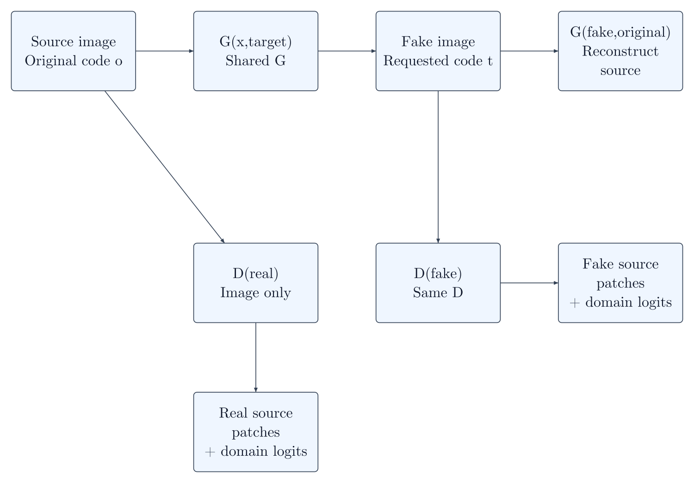
Check the three transforms on supplied pixels
Domain0 keeps the image,1 computes1-image, and2 rotates by90 degrees with out(y,x)=original(H-1-x,y), without inversion. The reusable native transform accepts signed square grayscale NHWC inputs and per-row integer0..2 codes; it does not clip or fit anything. The following2x2 pixels are supplied binary fractions. They make the orientation visible before any dataset is loaded.
#include <dm/dm.hpp>
int main() {
namespace n = dm::nn;
auto x = n::tensor({0., .25, .5, .75}, {1, 2, 2, 1}, n::DType::Float64);
auto all = n::models::StarDomainImages(
n::tile(x, {3, 1, 1, 1}), n::tensor({0, 1, 2}, {3}, n::DType::Int64));
if (!n::equal_bits(
n::take_rows(all, {2}), n::tensor({.5, 0., .75, .25}, {1, 2, 2, 1}, x.dtype())))
throw std::runtime_error("rotation orientation");
n::save_image_grid(all, "build/star_domain_toy.png", 3, 0, 1, 4, 220 / 255., 60);
}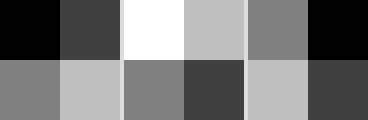
Select disjoint identities by occurrence order and keep unused IDs
For each digit, the first30 fitting observations enter domain0, next30 domain1, next30 domain2, leaving10 unused. With100 observations per digit this selects 900/1000 fitting rows. Held-out pools use6 per class/domain, selecting180/200. All selected and unused IDs preserve the original global row order. Original pixels remain available exactly for diagnostics; images are transformed only after selection. The checked native loader supplies cross-pool provenance and pixel-uniqueness checks; the split helper itself validates balanced metadata, unit pixels and unique nonnegative IDs within its supplied pool.
The toy below uses40 supplied IDs, four occurrences per digit, and per_class1. The fourth occurrence remains explicitly unused. Placeholder images are zeros; this toy explains identity selection and makes no pixel-uniqueness claim.
#include <dm/dm.hpp>
int main() {
namespace n = dm::nn;
auto labels = n::cast(n::arange(0, 40, 1, n::DType::Float64) / 4., n::DType::Int64),
ids = n::arange(100, 140, 1, n::DType::Int64);
auto out = n::models::SplitStarDomains(n::zeros({40, 28, 28, 1}), labels, ids, 1);
std::vector<double> selected = out.source.to_vector<double>(),
domain = out.domain.to_vector<double>(),
unused = out.unused.to_vector<double>(), height(unused.size(), 3);
auto p = dm::graphics::RPlot::create();
p.y_limits(-.5, 5.5)
.points(selected, domain, "Selected domain0/1/2", {37, 99, 235}, 4)
.points(unused, height, "Unused original IDs", {220, 38, 38}, 4)
.x_label("Supplied original source identity, preserved in global order")
.y_label("Assigned domain; unused shown separately at3")
.title("Three disjoint occurrences per digit, plus explicit unused IDs")
.save_svg("build/star_partition_toy.svg");
}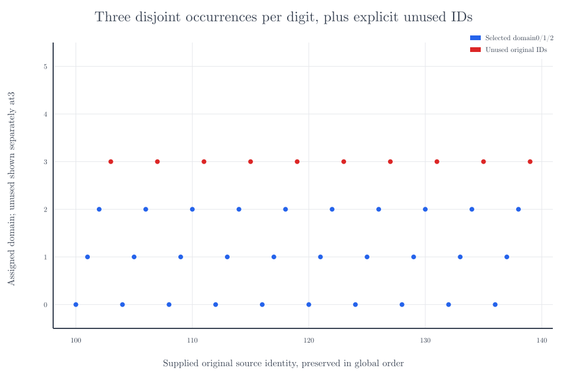
Separate stable three-domain cross entropy from source patch scores
StarDomainLoss uses mean(-sum(one_hot(target,3)*log_softmax(logits),classes)). Zero logits give log(3). For supplied logits(1000,-1000,0) and target1 it gives 2000 with partials(1,-1,0), without probability clipping or overflow. Domain IDs are checked before one-hot construction. The plot varies logit0 while the other two logits stay zero, showing CE for requested domains0 and1. It uses no fitted data. The raw source head is a separate least-squares map, not this CE.
#include <dm/dm.hpp>
int main() {
namespace n = dm::nn;
auto t = n::DType::Float64;
auto extreme = n::tensor({1000., -1000., 0.}, {1, 3}, t).requires_grad_();
auto loss = n::models::StarDomainLoss(extreme, n::ones({1}, n::DType::Int64));
auto partial = n::grad(loss, {extreme})[0];
if (loss.item() != 2000 || partial.at({0, 0}) != 1 || partial.at({0, 1}) != -1)
throw std::runtime_error("stable extreme CE");
std::vector<double> x, a, b;
for (int i = 0; i <= 40; ++i) {
double value = -4. + i * .2;
auto logits = n::tensor({value, 0., 0.}, {1, 3}, t);
x.push_back(value);
a.push_back(n::models::StarDomainLoss(logits, n::zeros({1}, n::DType::Int64)).item());
b.push_back(n::models::StarDomainLoss(logits, n::ones({1}, n::DType::Int64)).item());
}
auto p = dm::graphics::RPlot::create();
p.y_limits(0, 8)
.lines(x, a, "Requested domain0", {37, 99, 235}, 2)
.lines(x, b, "Requested domain1", {220, 38, 38}, 2)
.x_label("Supplied domain logit0; logits1/2 fixed at0")
.y_label("Native stable cross entropy")
.title("A domain head is trained against its explicit integer target")
.save_svg("build/star_ce_toy.svg");
}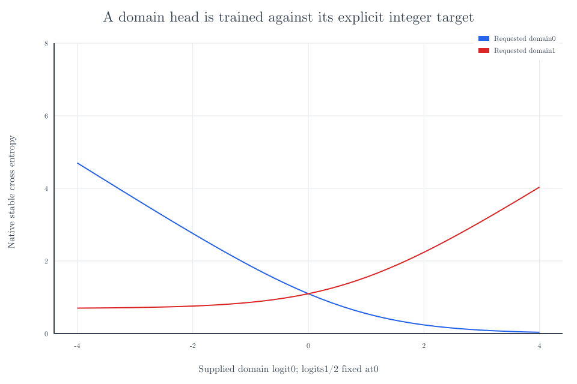
Keep both uses of the shared generator in the reconstruction derivative
A small supplied model makes the shared path checkable: g(x,t)=a*x+b*t, x=.25,b=.2,t=1,original=0, loss=(g(g(x,t),0)-x)^2. At a=.5, fake=.325, reconstruction=.1625 and dloss/da=-.07875. Treating fake as detached gives -.056875, even though reconstruction pixels are identical. The actual native StarGAN tests check the same distinction through the full U-Net.
#include <dm/dm.hpp>
int main() {
namespace n = dm::nn;
auto t = n::DType::Float64;
std::vector<double> x, full, stopped;
for (int i = 0; i <= 40; ++i) {
double value = i / 40.;
auto a = n::full({}, value, t).requires_grad_();
auto fake = a * .25 + .2;
auto reconstruction = a * fake;
auto loss = n::square(reconstruction - .25);
auto correct = n::grad(loss, {a})[0];
auto wrong = n::grad(n::square(a * fake.detach() - .25), {a})[0];
x.push_back(value);
full.push_back(correct.item());
stopped.push_back(wrong.item());
if (i == 20 &&
(std::abs(correct.item() + .07875) > 1e-14 || std::abs(wrong.item() + .056875) > 1e-14))
throw std::runtime_error("both G paths");
}
auto p = dm::graphics::RPlot::create();
p.y_limits(-.15, .55)
.lines(x, full, "Both shared uses", {37, 99, 235}, 2)
.lines(x, stopped, "Detached fake control", {220, 38, 38}, 2)
.x_label("Supplied shared generator coefficient a")
.y_label("Reconstruction loss partial with respect to a")
.title("Identical forward pixels can have different shared-G partials")
.save_svg("build/star_shared_toy.svg");
}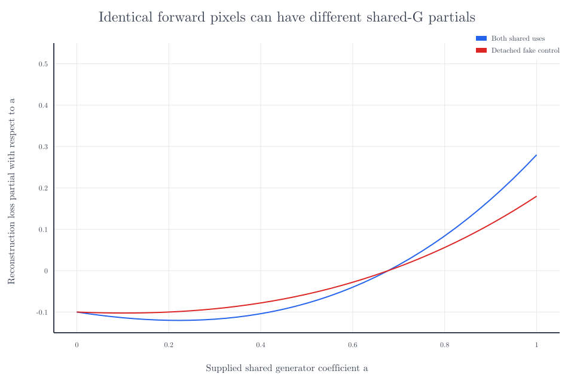
Preserve each objective scale and the critic-then-fresh-generator schedule
G=(full fake-to1 patch mean+fake-domain CE)+10*roundtrip meanL1. D=.5*(real-to1 patch mean+fake-to0 patch mean)+real-domain CE. There is no fake-domain CE in D loss, and no half on G's source term. At all-zero source and domain logits, source losses are G1/D.5 and CE is log(3). The toy below sets a supplied reconstruction error to.25, so complete G=1+log(3)+2.5 and D=.5+log(3). Known transformed targets are diagnostics only.
Each fitting batch captures and applies D first, then makes a fresh G forward through updated D using the same source/original/target batch. Separate Adam states own the two stores. A stale pre-D G capture changes the method; the saved first-batch control quantifies it later. No API hides captures or optimizer writes.
#include <dm/dm.hpp>
int main() {
namespace n = dm::nn;
auto zero = n::zeros({2, 7, 7, 1}),
ce = n::models::StarDomainLoss(n::zeros({2, 3}), n::zeros({2}, n::DType::Int64));
auto g = (n::mean(n::square(zero - 1.)) + ce) + 10. * n::mean(n::full({2, 28, 28, 1}, .25));
auto d = .5 * (n::mean(n::square(zero - 1.)) + n::mean(n::square(zero))) + ce;
std::print(
"| Supplied zero-head control | Value |\n|---|---:|\n| Three-domain CE | {} |\n| G with "
"reconstruction L1.25 | {} |\n| D | {} |\n",
ce.item(),
g.item(),
d.item());
}| Supplied zero-head control | Value |
|---|---|
| Three-domain CE | 1.0986123085021973 |
| G with reconstruction L1.25 | 4.598612308502197 |
| D | 1.5986123085021973 |
Trace the actual conditioned U-Net and shared critic trunk
The generator tiles a three-way one-hot target over28x28 and concatenates it after the source channel. Two biased normal(.02)4x4/stride2 ReLU maps4→4→8 encode14x14 then7x7. Learned transposes decode8→4, concatenate(up14,down14), then8→2. The final skip concatenates(up28,full conditioned input), six channels, before the3x3 sigmoid output. There is no normalization, dropout or noise. For the single-input plotting interface only, the trace packs source pixels and the supplied integer domain into785 values; it slices/casts that code before the native call. The production API keeps source and target separate.
#include <dm/dm.hpp>
int main() {
namespace n = dm::nn;
n::ParameterStore g(6301);
n::Module model(
[&](const n::Tensor& packed) {
auto source = n::reshape(n::slice(packed, {0, 0}, {1, 784}), {1, 28, 28, 1});
auto target = n::cast(n::reshape(n::slice(packed, {0, 784}, {1, 1}), {1}), n::DType::Int64);
n::model_stage("Supplied source", packed, source);
auto o = n::models::StarGanGenerate(g, source, target);
n::model_stage("Supplied target: tile one-hot3", packed, o.code);
n::model_stage(
"Concat source,target code", std::vector<n::Tensor>{source, o.code}, o.input);
n::model_stage("Down4x4/2 ReLU4 to4", o.input, o.down14);
n::model_stage("Down4x4/2 ReLU4 to8", o.down14, o.down7);
n::model_stage("Transpose8 to4 ReLU", o.down7, o.up14);
n::model_stage("Concat up14,down14", std::vector<n::Tensor>{o.up14, o.down14}, o.joined14);
n::model_stage("Transpose8 to2 ReLU", o.joined14, o.up28);
n::model_stage(
"Concat up28,full condition", std::vector<n::Tensor>{o.up28, o.input}, o.joined28);
return n::model_stage("Conv3x3 sigmoid6 to1", o.joined28, o.image);
},
"StarGAN G: requested-domain code in both real skips");
n::ModelPlotOptions options;
options.style = n::ModelPlotStyle::Flow;
options.detail = n::ModelPlotDetail::Blocks;
options.sizing.minimum_extent = 2;
options.sizing.max_planes = 4;
auto fig = model.plot(n::ones({1, 785}), options);
if (fig.parameter_count() != 1609 || g.size() != 10)
throw std::runtime_error("G source census");
fig.save_svg("build/star_generator_architecture.svg");
}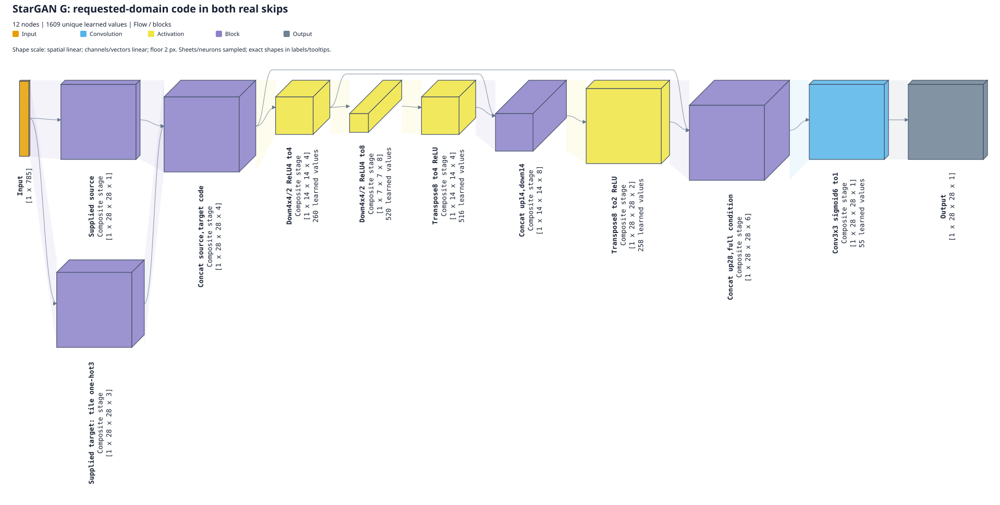
The image-only critic uses normal(.02)4x4/stride2 maps1→4→8, each followed by LeakyReLU(.2). Spatial mean of the7x7 trunk feeds a Glorot8→3 domain head; a separate normal3x3 head yields49 raw source scores. The domain head initializes before the source head to preserve seed6311's stream and names:688 values in8 leaves. Its raw source patches have nominal18x18 receptive fields, including zero padding near borders. The next trace retains both heads, returning their concatenation solely to make both visible in a single-output diagram.
#include <dm/dm.hpp>
int main() {
namespace n = dm::nn;
n::ParameterStore d(6311);
n::Module model(
[&](const n::Tensor& image) {
auto o = n::models::StarGanDiscriminate(d, image);
n::model_stage("Down4x4/2 leaky1 to4", image, o.down14);
n::model_stage("Down4x4/2 leaky4 to8", o.down14, o.down7);
n::model_stage("Spatial mean + domain dense3", o.down7, o.domain_logits);
n::model_stage("Raw source3x3 8 to1", o.down7, o.source);
auto flattened = n::reshape(o.source, {1, 49});
return n::model_stage(
"Both raw heads, diagnostic trace",
std::vector<n::Tensor>{o.source, o.domain_logits},
n::concat({flattened, o.domain_logits}, 1));
},
"StarGAN D: image-only shared trunk and two heads");
n::ModelPlotOptions options;
options.style = n::ModelPlotStyle::Flow;
options.detail = n::ModelPlotDetail::Blocks;
options.sizing.minimum_extent = 2;
options.sizing.max_planes = 4;
auto fig = model.plot(n::ones({1, 28, 28, 1}), options);
if (fig.parameter_count() != 688 || d.size() != 8)
throw std::runtime_error("D source census");
fig.save_svg("build/star_critic_architecture.svg");
}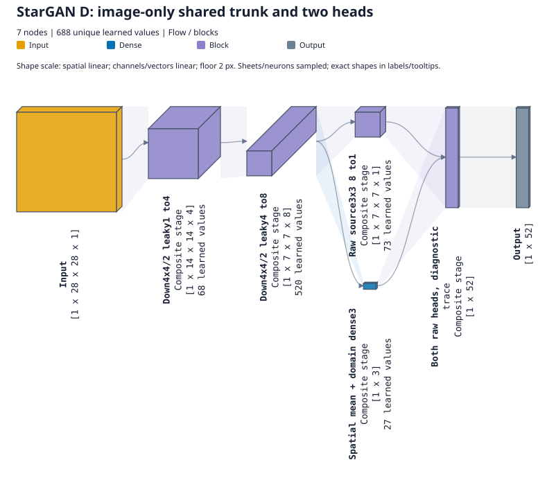
Run the complete native experiment with every fitting action visible
The native loader prepares/checks MNIST saliency pools, then SplitStarDomains selects the three disjoint domains. Gseed6301/Dseed6311 initialize once. Batch order6323 visits all900 fitting rows per epoch;29 batches include the last4 rows. Each epoch draws uniform target IDs from raw MTseed6337+epoch, rejecting 4294967295 before modulo3; accepted raw words are saved. These targets need not differ from the original domain. Fixed validation/test targets are (original+1)%3. Three epochs give87 writes per owner,174 total. Adam is (.0002,beta1.5,beta2.999,epsilon1e-8), with no hidden extra update.
Every epoch records validation, but selection stays at the fixed final epoch. The program saves every phase partial and after-state, all source outputs, accepted target words, stale-G control and restored inference checks. The additional domain means use fitting rows only; known target mappings stay outside the game and serve only MSE diagnostics. The balanced gallery includes all ten digits in every source domain without filtering generated results.
#include <dm/dm.hpp>
namespace nn = dm::nn;
namespace m = nn::models;
using nn::Tensor;
using Arrays = std::map<std::string, Tensor>;
void Require(bool ok, const std::string& why) {
if (!ok)
throw std::runtime_error(why);
}
void SaveArrays(const std::string& path, const Arrays& a) {
nn::save_npz(path, nn::NamedTensors(a.begin(), a.end()));
}
Tensor Rows(const Tensor& x, const std::vector<std::int64_t>& rows) {
return nn::take_rows(x, rows);
}
Tensor Flat784(const Tensor& x) {
return nn::reshape(x, {-1, 784});
}
void Mosaic(const std::filesystem::path& path, const Tensor& image, std::int64_t columns) {
nn::save_image_grid(
nn::reshape(image, {-1, 28, 28, 1}), path.string(), columns, 0, 1, 4, 220 / 255., 3);
}
bool BitEqual(const Tensor& a, const Tensor& b) {
return nn::equal_bits(a, b);
}
bool BitEqual(const Arrays& a, const Arrays& b) {
if (a.size() != b.size())
return false;
for (const auto& [k, v] : a)
if (!b.count(k) || !BitEqual(v, b.at(k)))
return false;
return true;
}
double MaxAbsDiff(const Tensor& a, const Tensor& b) {
return nn::max(nn::abs(nn::cast(a, nn::DType::Float64) - nn::cast(b, nn::DType::Float64))).item();
}
Arrays Fields(const m::StarGanOutput& o) {
return {
{"fake", o.fake},
{"reconstruction", o.reconstruction},
{"real_source", o.real_source},
{"fake_source", o.fake_source},
{"real_domain_logits", o.real_domain_logits},
{"fake_domain_logits", o.fake_domain_logits},
{"real_domain_probability", o.real_domain_probability},
{"fake_domain_probability", o.fake_domain_probability},
{"source_loss_g", o.source_loss_g},
{"source_loss_d", o.source_loss_d},
{"real_domain_loss", o.real_domain_loss},
{"fake_domain_loss", o.fake_domain_loss},
{"reconstruction_loss", o.reconstruction_loss},
{"generator_loss", o.generator_loss},
{"discriminator_loss", o.discriminator_loss}};
}
void Initialize(nn::ParameterStore& g, nn::ParameterStore& d) {
nn::NoGradGuard guard;
auto fake = m::StarGanGenerate(g, nn::zeros({1, 28, 28, 1}), nn::zeros({1}, nn::DType::Int32));
m::StarGanDiscriminate(d, fake.image);
}
Arrays Snapshot(const std::vector<nn::ParameterStore*>& p) {
Arrays a;
for (int k = 0; k < 2; ++k)
for (const auto& name : p[k]->names())
a.emplace(std::to_string(k) + "/" + name, p[k]->at(name).detach().clone());
return a;
}
void Restore(const std::vector<nn::ParameterStore*>& p, const std::string& path) {
auto a = nn::load_npz(path);
Require(a.size() == 18, "complete18-leaf checkpoint");
for (const auto& [key, value] : a) {
Require(
key.size() > 2 && (key[0] == '0' || key[0] == '1') && key[1] == '/',
"known checkpoint prefix");
auto& owner = *p[key[0] - '0'];
Require(
owner.contains(key.substr(2)) && owner.at(key.substr(2)).shape() == value.shape(),
"known matching checkpoint leaf");
owner.set(key.substr(2), value);
}
}
std::vector<Tensor> Ordered(nn::ParameterStore& p, int group, const Arrays& a) {
std::vector<Tensor> out;
for (const auto& name : p.names())
out.push_back(a.at(std::to_string(group) + "/" + name));
return out;
}
void RequireOnlyOwnersChanged(
const Arrays& a,
const Arrays& b,
const std::vector<std::string>& prefixes,
const std::string& why,
bool require_change) {
bool changed = false;
for (const auto& [key, value] : a) {
bool selected = false;
for (const auto& prefix : prefixes)
selected |= key.starts_with(prefix);
if (!BitEqual(value, b.at(key))) {
Require(selected, why);
changed = true;
}
}
if (require_change)
Require(changed, why + " changes selected store");
}
Tensor Generate(nn::ParameterStore& g, const Tensor& x, const Tensor& t) {
nn::NoGradGuard guard;
return m::StarGanGenerate(g, x, t).image;
}
Arrays Classify(nn::ParameterStore& d, const Tensor& x) {
nn::NoGradGuard guard;
auto out = m::StarGanDiscriminate(d, x);
return {{"source", out.source}, {"domain_probability", out.domain_probability}};
}
namespace {
double Value(const Arrays& a, const std::string& key) {
return a.at(key).item();
}
std::vector<std::int32_t> Ints(const Tensor& t) {
return nn::cast(t, nn::DType::Int32).contiguous().to_vector<std::int32_t>();
}
Tensor IntTensor(const std::vector<std::int32_t>& v) {
return nn::from_vector(v, {std::int64_t(v.size())});
}
/// Domain 0 = original, 1 = 1 - x, 2 = rotated (out(y, x) = in(27 - x, y)).
Tensor DomainImages(const Tensor& original, const Tensor& domain) {
return m::StarDomainImages(original, domain);
}
/// Uniform domains v % 3 from std::mt19937(seed), rejecting 2^32 - 1; also the raw draws.
std::pair<Tensor, Tensor> Targets(int n, std::uint32_t seed) {
auto out = m::UniformCategorical(n, seed);
return {out.labels, out.raw};
}
Tensor NextDomain(const Tensor& original) {
auto d = Ints(original);
for (auto& v : d)
v = (v + 1) % 3;
return IntTensor(d);
}
std::int64_t Argmax(const std::vector<float>& p, std::int64_t row) {
std::int64_t best = 0;
for (int c = 1; c < 3; ++c)
if (p[row * 3 + c] > p[row * 3 + best])
best = c;
return best;
}
void Run(
const std::filesystem::path& data,
const std::filesystem::path& root,
int epochs,
const std::string& init) {
std::filesystem::create_directories(root);
const auto probe_root = root;
std::filesystem::create_directories(probe_root / "phases");
const auto originals = m::LoadSaliency(data);
std::vector<m::StarDomains> pools;
Arrays records;
for (int k = 0; k < 3; ++k) {
pools.push_back(
m::SplitStarDomains(
originals[k].images, originals[k].labels, originals[k].source, k == 0 ? 30 : 6));
const std::string name = k == 0 ? "fit" : k == 1 ? "validation" : "test";
records.emplace(name + "_all_original", originals[k].images);
records.emplace(name + "_all_digit", originals[k].labels);
records.emplace(name + "_all_source_ids", originals[k].source);
records.emplace(name + "_images", pools[k].image);
records.emplace(name + "_original", pools[k].original);
records.emplace(name + "_domains", pools[k].domain);
records.emplace(name + "_digits", pools[k].digit);
records.emplace(name + "_source_ids", pools[k].source);
records.emplace(name + "_unused_source_ids", pools[k].unused);
}
SaveArrays((root / "data.npz").string(), records);
const Tensor vt = NextDomain(pools[1].domain), tt = NextDomain(pools[2].domain);
SaveArrays((root / "fixed_targets.npz").string(), {{"validation", vt}, {"test", tt}});
nn::ParameterStore g(6301), d(6311);
std::vector<nn::ParameterStore*> stores{&g, &d};
Initialize(g, d);
nn::OptimizerConfig config;
config.kind = nn::OptimizerKind::Adam;
config.beta1 = .5;
config.beta2 = .999;
config.epsilon = 1e-8;
nn::Optimizer go(g, .0002, config), do_(d, .0002, config);
std::vector<nn::Optimizer*> optimizers{&go, &do_};
auto evaluate = [&](const Tensor& x, const Tensor& o, const Tensor& t) {
nn::NoGradGuard guard;
return Fields(m::StarGan(g, d, x, o, t));
};
auto capture = [&](int group, const Tensor& x, const Tensor& o, const Tensor& t) {
// Always fresh: the G capture below observes the D write from this batch.
auto out = m::StarGan(g, d, x, o, t);
auto partial = nn::grad(
group == 0 ? out.generator_loss : out.discriminator_loss, stores[group]->parameters());
Arrays result;
for (std::size_t i = 0; i < partial.size(); ++i)
result.emplace(std::to_string(group) + "/" + stores[group]->names()[i], partial[i]);
return result;
};
if (!init.empty())
Restore(stores, init);
Require(
g.count() == 1609 && d.count() == 688 && g.size() + d.size() == 18, "2297 params 18 tensors");
SaveArrays((root / "initial_arrays.npz").string(), Snapshot(stores));
SaveArrays(
(root / "initial_outputs.npz").string(), evaluate(pools[2].image, pools[2].domain, tt));
nn::BatchOrder order(900, 32, 6323);
int steps = 0;
std::ofstream history(root / "history.tsv"), batches(root / "batches.tsv");
history.precision(17);
history << "epoch\tdiscriminator_loss\tgenerator_loss\treal_domain_loss\tfake_domain_"
"loss\treconstruction_loss\n";
batches << "epoch\tstep\trow\tsource_id\n";
const auto source = Ints(pools[0].source);
Tensor first_x, first_original, first_target;
const auto started = std::chrono::steady_clock::now();
for (int epoch = 1; epoch <= epochs; ++epoch) {
const auto targets = Targets(900, 6337 + epoch);
SaveArrays(
(probe_root / ("probe-targets" + std::to_string(epoch) + ".npz")).string(),
{{"target", targets.first}, {"raw", targets.second}});
order.begin_epoch();
for (;;) {
const auto rows = order.next();
if (rows.empty())
break;
const Tensor x = Rows(pools[0].image, rows), original = Rows(pools[0].domain, rows),
target = Rows(targets.first, rows);
if (!steps) {
first_x = x;
first_original = original;
first_target = target;
SaveArrays(
(probe_root / "probe-first-input.npz").string(),
{{"x", x}, {"original", original}, {"target", target}});
SaveArrays(
(probe_root / "probe-first-forward.npz").string(), evaluate(x, original, target));
SaveArrays(
(probe_root / "probe-stale-g-gradient.npz").string(), capture(0, x, original, target));
}
for (int group : {1, 0}) {
const auto before = Snapshot(stores);
const auto partial = capture(group, x, original, target);
const auto name = "batch" + std::to_string(steps) + (group == 1 ? "-d" : "-g");
SaveArrays((probe_root / "phases" / (name + "-gradient.npz")).string(), partial);
optimizers[group]->step(Ordered(*stores[group], group, partial));
SaveArrays((probe_root / "phases" / (name + "-after.npz")).string(), Snapshot(stores));
RequireOnlyOwnersChanged(
before,
Snapshot(stores),
{std::to_string(group) + "/"},
"each StarGAN step updates ONLY own group",
!steps);
}
for (auto row : rows)
batches << epoch << '\t' << steps << '\t' << row << '\t' << source[row] << '\n';
++steps;
}
SaveArrays(
(probe_root / ("probe-epoch" + std::to_string(epoch) + ".npz")).string(), Snapshot(stores));
SaveArrays(
(probe_root / ("probe-epoch" + std::to_string(epoch) + "-test.npz")).string(),
evaluate(pools[2].image, pools[2].domain, tt));
const auto v = evaluate(pools[1].image, pools[1].domain, vt);
SaveArrays(
(probe_root / ("probe-epoch" + std::to_string(epoch) + "-validation.npz")).string(), v);
history << epoch;
for (auto key :
{"discriminator_loss",
"generator_loss",
"real_domain_loss",
"fake_domain_loss",
"reconstruction_loss"})
history << '\t' << Value(v, key);
history << '\n';
std::cout << "epoch " << epoch << ": D=" << Value(v, "discriminator_loss")
<< ", G=" << Value(v, "generator_loss")
<< ", reconstruction L1=" << Value(v, "reconstruction_loss") << std::endl;
}
const double seconds =
std::chrono::duration<double>(std::chrono::steady_clock::now() - started).count();
const auto checkpoint = (root / "final.npz").string();
SaveArrays(checkpoint, Snapshot(stores));
for (int group = 0; group < 2; ++group)
SaveArrays(
(root / ("final_gradients_group" + std::to_string(group) + ".npz")).string(),
capture(group, first_x, first_original, first_target));
nn::ParameterStore restored_g(1), restored_d(2);
Initialize(restored_g, restored_d);
std::vector<nn::ParameterStore*> restored{&restored_g, &restored_d};
Restore(restored, checkpoint);
nn::NoGradGuard inference_guard; // All following controls are read-only.
auto deployed_evaluate = [&](const Tensor& x, const Tensor& o, const Tensor& t) {
return Fields(m::StarGan(restored_g, restored_d, x, o, t));
};
Require(
BitEqual(Snapshot(stores), Snapshot(restored)), "all G/D source-domain heads restore exact");
const auto before = Snapshot(restored);
const auto output = deployed_evaluate(pools[2].image, pools[2].domain, tt);
const Tensor prediction = Generate(restored_g, pools[2].image, tt);
Require(BitEqual(prediction, output.at("fake")), "source + target domain ONLY generation exact");
const auto classify = Classify(restored_d, pools[2].image);
Require(
BitEqual(classify.at("source"), output.at("real_source")) &&
BitEqual(classify.at("domain_probability"), output.at("real_domain_probability")),
"IMAGE ONLY D without domain/noise feed exact");
const double parity = MaxAbsDiff(
Generate(restored_g, Rows(pools[2].image, {0}), Rows(tt, {0})), Rows(prediction, {0}));
Require(parity < 2e-6, "single batch parity");
std::vector<std::int32_t> all(180, 0);
const Tensor p0 = Generate(restored_g, pools[2].image, IntTensor(all));
std::fill(all.begin(), all.end(), 1);
const Tensor p1 = Generate(restored_g, pools[2].image, IntTensor(all));
std::fill(all.begin(), all.end(), 2);
const Tensor p2 = Generate(restored_g, pools[2].image, IntTensor(all));
const double domain_effect = std::max(MaxAbsDiff(p0, p1), MaxAbsDiff(p0, p2));
Require(domain_effect > 1e-5, "target domain changes G pixels");
int rejected = 0;
for (int invalid : {-1, 3}) {
std::fill(all.begin(), all.end(), 0);
all[0] = invalid;
try {
Generate(restored_g, pools[2].image, IntTensor(all));
} catch (const std::exception&) {
++rejected;
}
}
try {
Generate(restored_g, pools[2].image, Rows(tt, {0}));
} catch (const std::exception&) {
++rejected;
}
Require(rejected == 3, "invalid domains rejected before one hot");
Require(BitEqual(before, Snapshot(restored)), "all inference immutable");
SaveArrays((root / "outputs.npz").string(), output);
SaveArrays(
(root / "domain_controls.npz").string(),
{{"target0_prediction", p0},
{"target1_prediction", p1},
{"target2_prediction", p2},
{"image_only_source", classify.at("source")},
{"image_only_domain_probability", classify.at("domain_probability")}});
const Tensor known = DomainImages(pools[2].original, tt);
SaveArrays((root / "diagnostic_known_mapping.npz").string(), {{"target", known}});
const double mse =
nn::mean(
nn::square(
nn::cast(prediction, nn::DType::Float64) - nn::cast(known, nn::DType::Float64)))
.item();
double real_accuracy = 0, fake_accuracy = 0;
const auto rp = output.at("real_domain_probability").contiguous().to_vector<float>(),
fp = output.at("fake_domain_probability").contiguous().to_vector<float>();
const auto domain = Ints(pools[2].domain), targets = Ints(tt), digits = Ints(pools[2].digit);
for (int b = 0; b < 180; ++b)
real_accuracy += Argmax(rp, b) == domain[b], fake_accuracy += Argmax(fp, b) == targets[b];
std::vector<std::int32_t> gallery_ids;
std::vector<Tensor> gallery_rows;
for (int d = 0; d < 3; ++d)
for (int digit = 0; digit < 3; ++digit) {
int row = -1;
for (int b = 0; b < 180 && row < 0; ++b)
if (domain[b] == d && digits[b] == digit)
row = b;
Require(row >= 0, "first sample per 3x3 source-domain/digit grid");
gallery_ids.push_back(row);
for (const Tensor* t : std::vector<const Tensor*>{
&pools[2].image, &p0, &p1, &p2, &output.at("reconstruction"), &known})
gallery_rows.push_back(Flat784(Rows(*t, {row})));
}
const Tensor gallery = nn::concat(gallery_rows, 0);
SaveArrays(
(root / "gallery.npz").string(), {{"images", gallery}, {"rows", IntTensor(gallery_ids)}});
Mosaic(root / "all_domains.png", gallery, 6);
Require(go.iterations() == 87 && do_.iterations() == 87, "87 explicit Adam writes per owner");
// A stronger diagnostic reference estimates each target-domain mean from fit rows only.
std::vector<Tensor> means;
for (int domain = 0; domain < 3; ++domain) {
std::vector<std::int64_t> rows;
auto code = Ints(pools[0].domain);
for (std::size_t i = 0; i < code.size(); ++i)
if (code[i] == domain)
rows.push_back(i);
means.push_back(nn::mean(nn::cast(Rows(pools[0].image, rows), nn::DType::Float64), {0}));
}
const Tensor mean_bank = nn::stack(means, 0),
mean_prediction = nn::take_rows(
mean_bank, nn::cast(tt, nn::DType::Int64).to_vector<std::int64_t>());
auto mse_ref = [&](const Tensor& image) {
return nn::mean(
nn::square(
nn::cast(image, nn::DType::Float64) - nn::cast(known, nn::DType::Float64)))
.item();
};
SaveArrays(
(root / "probe-fitting-mean-baseline.npz").string(),
{{"means", mean_bank},
{"prediction", mean_prediction},
{"mse",
nn::tensor(
{mse_ref(prediction), mse_ref(mean_prediction), mse_ref(pools[2].image)},
{3},
nn::DType::Float64)}});
std::vector<Tensor> balanced;
std::vector<std::int32_t> selected;
for (int digit = 0; digit < 10; ++digit)
for (int domain = 0; domain < 3; ++domain) {
int row = -1;
auto label = Ints(pools[2].digit), codes = Ints(pools[2].domain);
for (int i = 0; i < 180 && row < 0; ++i)
if (label[i] == digit && codes[i] == domain)
row = i;
Require(row >= 0, "ten-class three-domain gallery");
selected.push_back(row);
for (const Tensor* image : std::vector<const Tensor*>{&pools[2].image, &prediction, &known})
balanced.push_back(Rows(*image, {row}));
}
const auto balanced_image = nn::concat(balanced, 0);
SaveArrays(
(root / "probe-balanced-gallery.npz").string(),
{{"images", balanced_image}, {"rows", IntTensor(selected)}});
Mosaic(root / "balanced.png", balanced_image, 9);
std::ofstream meta(root / "metrics.json");
meta.precision(17);
meta << "{\"parameters\":2297,\"epochs\":" << epochs << ",\"steps_per_group\":" << steps
<< ",\"optimizer_updates\":" << 2 * steps << ",\"selected_epoch_fixed_final\":" << epochs
<< ",\"diagnostic_known_mapping_mse\":" << mse
<< ",\"test_real_domain_accuracy\":" << real_accuracy / 180
<< ",\"test_generated_requested_domain_accuracy\":" << fake_accuracy / 180
<< ",\"target_domain_pixel_max_effect\":" << domain_effect
<< ",\"single_batch_max_error\":" << parity
<< ",\"invalid_domain_controls_rejected\":" << rejected;
for (auto key :
{"discriminator_loss",
"generator_loss",
"source_loss_g",
"source_loss_d",
"real_domain_loss",
"fake_domain_loss",
"reconstruction_loss"})
meta << ",\"test_" << key << "\":" << Value(output, key);
meta << ",\"training_seconds\":" << seconds << "}\n";
Require(bool(meta) && bool(history) && bool(batches), "complete StarGAN records");
std::cout << "fixed final=" << epochs
<< ", real/generated domain accuracy=" << real_accuracy / 180 << "/"
<< fake_accuracy / 180 << ", mapping MSE=" << mse
<< ", test D/G=" << Value(output, "discriminator_loss") << "/"
<< Value(output, "generator_loss")
<< "; single G/3 domains/classifier/roundtrip/restore/immutable PASS (training "
<< seconds << " s)\nArtifacts: " << root.string() << "\nAll star_gan checks passed.\n";
}
} // namespace
int main() {
auto data = std::filesystem::path(dm::datasets::data_home()) / "saliency";
dm::datasets::prepare_example_data("mnist-assets", data.parent_path());
Run(data, "build/star_gan", 3, "");
}epoch 1: D=1.58477, G=6.83707, reconstruction L1=0.475263 epoch 2: D=1.54796, G=6.6807, reconstruction L1=0.462881 epoch 3: D=1.48256, G=6.36028, reconstruction L1=0.437764 fixed final=3, real/generated domain accuracy=0.683333/0.333333, mapping MSE=0.202748, test D/G=1.48392/6.36832; single G/3 domains/classifier/roundtrip/restore/immutable PASS (training 1.46803 s) Artifacts: build/star_gan All star_gan checks passed.
Inspect disjoint real fitting-domain examples
Each digit row shows one original-domain sample, a different inverted-domain sample and another rotated-domain sample, selected by their original IDs. These are independent observations rather than transformed paired copies. Labels are used to make the diagnostic grid, never as network inputs. All 28x28 galleries enlarge pixels3 times with nearest sampling, four-pixel gray gaps and no outer padding.
#include <dm/dm.hpp>
namespace n = dm::nn;
namespace m = n::models;
using A = std::map<std::string, n::Tensor>;
A Read(const std::string& path) {
A a;
for (const auto& [key, value] : n::load_npz(path))
a.emplace(key, value);
return a;
}
int main() {
auto a = Read("build/star_gan/data.npz");
auto labels = a.at("fit_digits").to_vector<int>(), domains = a.at("fit_domains").to_vector<int>();
std::vector<n::Tensor> panels;
for (int digit = 0; digit < 10; ++digit)
for (int domain = 0; domain < 3; ++domain) {
int row = -1;
for (std::size_t i = 0; i < labels.size() && row < 0; ++i)
if (labels[i] == digit && domains[i] == domain)
row = i;
if (row < 0)
throw std::runtime_error("all digit/domain cases");
panels.push_back(n::take_rows(a.at("fit_images"), {row}));
}
n::save_image_grid(
n::concat(panels, 0), "build/star_real_domains.png", 3, 0, 1, 4, 220 / 255., 3);
}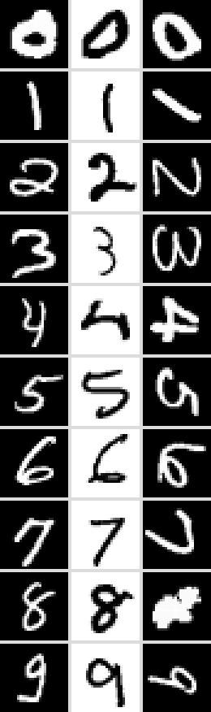
Retain every validation record and the fixed final checkpoint
D includes real-domain CE; G includes fake-domain CE plus reconstruction10. The validation curves therefore show those composite losses and reconstruction L1 separately. They retain all three epochs, without smoothing. A smaller adversarial objective does not establish visual quality or requested-domain accuracy; the held-out diagnostics below evaluate those questions separately.
#include <dm/dm.hpp>
namespace n = dm::nn;
namespace m = n::models;
using A = std::map<std::string, n::Tensor>;
A Read(const std::string& path) {
A a;
for (const auto& [key, value] : n::load_npz(path))
a.emplace(key, value);
return a;
}
int main() {
auto p = dm::graphics::RPlot::create();
p.y_limits(0, 10);
std::vector<double> epoch, d, g, reconstruction;
for (int e = 1; e <= 3; ++e) {
auto a = Read("build/star_gan/probe-epoch" + std::to_string(e) + "-validation.npz");
epoch.push_back(e);
d.push_back(a.at("discriminator_loss").item());
g.push_back(a.at("generator_loss").item());
reconstruction.push_back(a.at("reconstruction_loss").item());
}
p.lines(epoch, d, "D composite", {37, 99, 235}, 2)
.lines(epoch, g, "G composite", {220, 38, 38}, 2)
.lines(epoch, reconstruction, "Roundtrip L1", {22, 163, 74}, 2)
.x_label("Fixed epoch; final checkpoint is epoch3")
.y_label("Held-out validation objective or mean L1")
.title("All three validation records; scales are explicitly different")
.save_svg("build/star_learning.svg");
}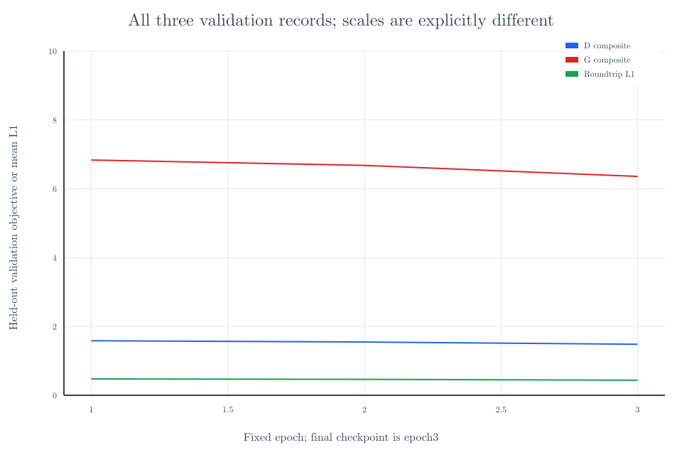
Preserve the original gallery and extend coverage to all ten digits
The original gallery selects the first digit0,1,2 observation in each source domain. Its six columns are source, requested domain0, requested1, requested2, reconstruction through original code, and known target for the fixed next-domain request. The three generated-domain columns are counterfactual requests from the same source row; the known mapping is supplied only for diagnosis.
#include <dm/dm.hpp>
namespace n = dm::nn;
namespace m = n::models;
using A = std::map<std::string, n::Tensor>;
A Read(const std::string& path) {
A a;
for (const auto& [key, value] : n::load_npz(path))
a.emplace(key, value);
return a;
}
int main() {
std::filesystem::copy_file(
"build/star_gan/all_domains.png",
"build/star_original_gallery.png",
std::filesystem::copy_options::overwrite_existing);
}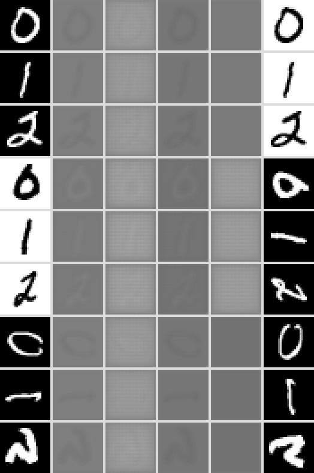
The added balanced gallery uses ten digit rows. Each row has three triplets, for source domains0,1,2 respectively; every triplet is source, G(source,next domain), known next-domain target. Thus all30 source-domain/digit combinations are visible. No generated sample is filtered or replaced, and known targets remain outside fitting. These small fixed-final translations stay weak.
#include <dm/dm.hpp>
namespace n = dm::nn;
namespace m = n::models;
using A = std::map<std::string, n::Tensor>;
A Read(const std::string& path) {
A a;
for (const auto& [key, value] : n::load_npz(path))
a.emplace(key, value);
return a;
}
int main() {
std::filesystem::copy_file(
"build/star_gan/balanced.png",
"build/star_balanced_gallery.png",
std::filesystem::copy_options::overwrite_existing);
}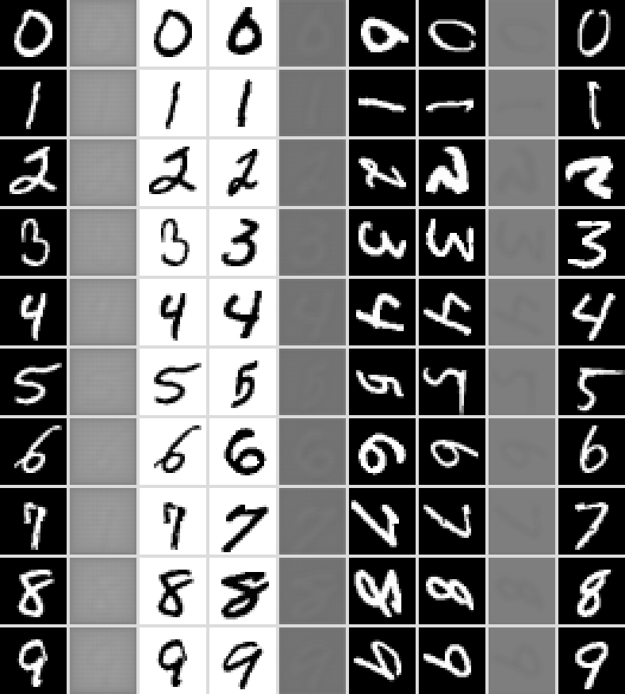
Measure the real classifier and generated requested-domain classifier separately
On180 test rows the image-only D classifies real domains with accuracy .6833333, while generated images match requested domains only.3333333. The scatter-style confusion display uses all three true/requested classes and all three predicted classes in each panel. Marker radius is1+2*sqrt(count), increasing with the number of held-out rows. This classifier is learned alongside G and is not an independent perceptual evaluator. Domain recognition cannot establish digit identity, texture fidelity or coverage.
#include <dm/dm.hpp>
namespace n = dm::nn;
namespace m = n::models;
using A = std::map<std::string, n::Tensor>;
A Read(const std::string& path) {
A a;
for (const auto& [key, value] : n::load_npz(path))
a.emplace(key, value);
return a;
}
int main() {
auto data = Read("build/star_gan/data.npz"), out = Read("build/star_gan/outputs.npz"),
target = Read("build/star_gan/fixed_targets.npz");
std::vector<double> x, y, size;
for (int head = 0; head < 2; ++head) {
auto truth = (head ? target.at("test") : data.at("test_domains")).to_vector<int>();
auto probability =
out.at(head ? "fake_domain_probability" : "real_domain_probability").to_vector<float>();
int counts[3][3]{};
for (int row = 0; row < 180; ++row) {
int best = 0;
for (int c = 1; c < 3; ++c)
if (probability[row * 3 + c] > probability[row * 3 + best])
best = c;
++counts[truth[row]][best];
}
for (int a = 0; a < 3; ++a)
for (int c = 0; c < 3; ++c) {
x.push_back(c + head * 5);
y.push_back(a);
size.push_back(counts[a][c]);
}
}
auto p = dm::graphics::RPlot::create();
p.y_limits(-.5, 4);
for (std::size_t i = 0; i < x.size(); ++i)
p.points(
{x[i]},
{y[i]},
"",
i < 9 ? dm::graphics::RGB{37, 99, 235} : dm::graphics::RGB{220, 38, 38},
1. + std::sqrt(size[i]) * 2.);
p.x_label("Predicted domain0/1/2 at x0/1/2(real) or5/6/7(generated)")
.y_label("Observed original domain(real) / requested domain(generated)")
.title("Real and generated domain confusion; marker radius1+2 sqrt(count)")
.save_svg("build/star_domain_confusion.svg");
}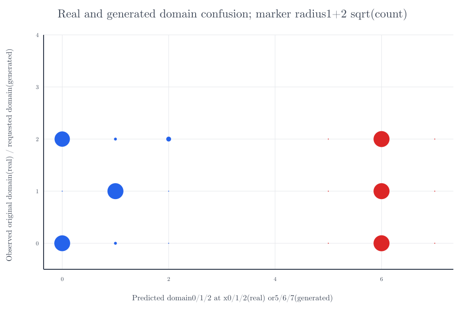
Compare known-map MSE with fitting-only means and an unchanged-source reference
The source diagnostic uses exact retained originals to form the requested known transform. Its final generator MSE is.2027483411. The next plot compares that with target-domain means estimated from only300 fitting images per domain and with returning the unchanged source. These are diagnostic references, not objectives or extra fitting. All180 known targets are used; row numbers do not create paired fitting targets. Fitting-only means reach MSE.0678190105 and the unchanged-source reference .6192136943. Means outperform G on this diagnostic, qualifying claims about the learned mapping even when target-code changes are measurable.
#include <dm/dm.hpp>
namespace n = dm::nn;
namespace m = n::models;
using A = std::map<std::string, n::Tensor>;
A Read(const std::string& path) {
A a;
for (const auto& [key, value] : n::load_npz(path))
a.emplace(key, value);
return a;
}
int main() {
auto a = Read("build/star_gan/probe-fitting-mean-baseline.npz");
auto value = a.at("mse").to_vector<double>();
std::print(
"Known-map MSE: G={}, fitting target-domain mean={}, unchanged source={}.\n",
value[0],
value[1],
value[2]);
auto p = dm::graphics::RPlot::create();
p.y_limits(0, .7)
.points({0, 1, 2}, value, "All180 known targets", {37, 99, 235}, 6)
.x_label("Reference0=G,1=fitting-only target-domain mean,2=unchanged source")
.y_label("Double mean squared error against diagnostic known map")
.title("A requested-domain effect alone does not establish a learned mapping")
.save_svg("build/star_mapping_errors.svg");
}Known-map MSE: G=0.2027483410699044, fitting target-domain mean=0.06781901053268977, unchanged source=0.6192136943482853.
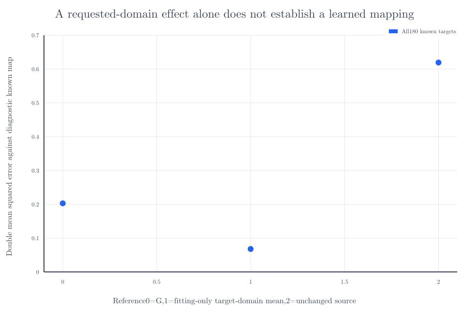
Retain every target-conditioning effect and the stale-gradient control
The original all-domain control evaluates each test source with target0,1,2. Its maximum pixel effect is.1486200988. The next curve keeps every test row's maximum absolute change between target0 and either alternative target, sorted for display. This measures sensitivity to the requested code, not correct translation or digit fidelity. No row is removed.
#include <dm/dm.hpp>
namespace n = dm::nn;
namespace m = n::models;
using A = std::map<std::string, n::Tensor>;
A Read(const std::string& path) {
A a;
for (const auto& [key, value] : n::load_npz(path))
a.emplace(key, value);
return a;
}
int main() {
auto a = Read("build/star_gan/domain_controls.npz");
auto effect = n::maximum(
n::abs(a.at("target0_prediction") - a.at("target1_prediction")),
n::abs(a.at("target0_prediction") - a.at("target2_prediction")));
auto y = n::max(n::reshape(effect, {180, 784}), {1}).to_vector<double>();
std::sort(y.begin(), y.end());
std::vector<double> x(180);
std::iota(x.begin(), x.end(), 1.);
auto p = dm::graphics::RPlot::create();
p.y_limits(0, .24)
.lines(x, y, "Domain effect", {37, 99, 235}, 2)
.x_label("Sorted test row index, all180 source rows")
.y_label("Maximum absolute pixel change among target-code controls")
.title("Every source retains its requested-domain sensitivity")
.save_svg("build/star_domain_effects.svg");
}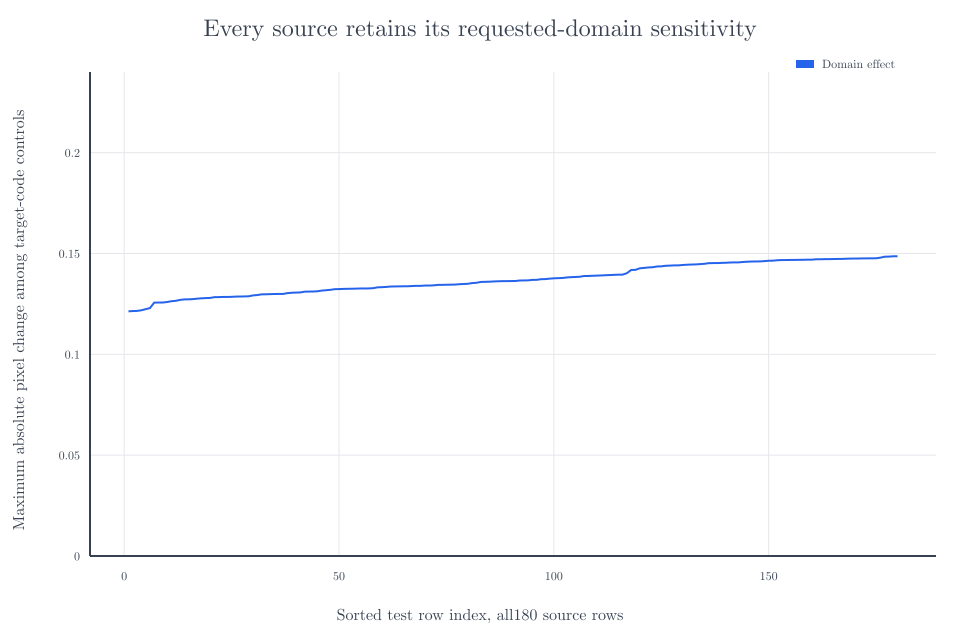
On the first real training batch, capturing G before D's update changes the G partial vector by at most.00003471970558 compared with the required fresh capture after D's write. Every one of the1609 G coordinates is plotted below, ordered by sorted tensor key then row-major coordinate. This is a partial-vector difference, not an extra parameter update. The actual run applies the fresh vector only.
#include <dm/dm.hpp>
namespace n = dm::nn;
namespace m = n::models;
using A = std::map<std::string, n::Tensor>;
A Read(const std::string& path) {
A a;
for (const auto& [key, value] : n::load_npz(path))
a.emplace(key, value);
return a;
}
int main() {
auto stale = Read("build/star_gan/probe-stale-g-gradient.npz"),
fresh = Read("build/star_gan/phases/batch0-g-gradient.npz");
std::vector<n::Tensor> values;
for (const auto& [key, value] : stale)
values.push_back(
n::reshape(
n::abs(n::cast(value, n::DType::Float64) - n::cast(fresh.at(key), n::DType::Float64)),
{-1}));
auto delta = n::concat(values, 0);
if (delta.numel() != 1609 || std::abs(n::max(delta).item() - 3.471970558166504e-5) > 1e-15)
throw std::runtime_error("stale source G control");
auto p = dm::graphics::RPlot::create();
p.y_limits(-2, 70)
.lines(
n::arange(0, 1609, 1, n::DType::Float64).to_vector<double>(),
(delta * 1e6).to_vector<double>(),
"Stale vs fresh G",
{37, 99, 235},
1.3)
.x_label("G partial coordinate; sorted source keys then row-major values")
.y_label("Absolute first-batch G partial change, multiplied by1e6")
.title("Fresh G through updated D is part of the method")
.save_svg("build/star_stale_gradient.svg");
}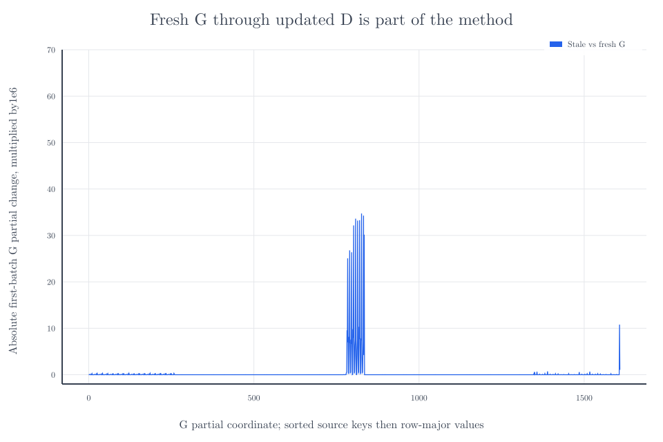
Independent NumPy checks203745 native parameter partials(max2.46e-6),2470079 forward values(max5.45e-7),49 scalar finite differences, all174 Adam transitions bit exactly and every phase's unselected owners. All2700 fitting visits and accepted target words match. Disjoint per-class selected/unused IDs, domain transforms, source-only G, image-only D, known diagnostic pixels, all validation records and final-test loss/accuracy scalars pass. Original11 archives contain 4307530 exact values;363 phase/probe archives add2504554 exact values. The original PNG, both TSVs and non-timing metrics match. Restored independent stores, single/batch generation and all three invalid-domain controls pass.
The fixed-final result remains weak: reconstruction L1.438569665, G loss 6.36832428, D loss1.48392320 and generated requested-domain accuracy one third. Valid conditioning and roundtrip arithmetic do not establish faithful translation, class preservation or convergence. The report preserves all original panels and adds all-digit diagnostics and fitting-only references. Canonical functionality lives in the C++ API; Python/R expose the same owning live fields. Independent full language fitting loops remain a separate migration task. Optional development oracle: scripts/check_star_gan.py; native dataset preparation is part of the complete program and does not require another checkout or Python data scripts.